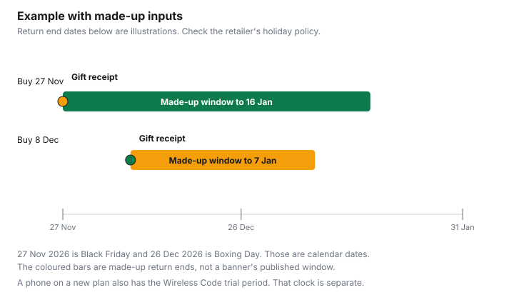

Technology · Canada
Holiday Returns on Electronics in Canada (2026): Gift Receipts, Restocking Fees and Opened Boxes
A phone, a laptop, or a tablet bought as a gift in November can still be in the box in January, or it can be opened, activated, and past the window the giver assumed. The return clock is the one that retailer prints for that purchase. There is no national holiday window on this page. Black Friday in 2026 is Friday 27 November, Cyber Monday is Monday 30 November, and Boxing Day is Saturday 26 December. Those are calendar dates. They are not a promise that a store's return window stays open through any of them. Clothing windows are on holiday return windows for clothing. The general Canadian position on change-of-mind versus a defect is on store return policies.
Key takeaways
- Check the retailer's holiday return policy for that receipt. This page does not quote a chain's number of days.
- A restocking fee is a store charge for taking an item back. Whether an opened phone or laptop triggers one is on that retailer's page.
- Ask for a gift receipt at purchase. Whether the store will return a gift without one is the store's rule.
- A "was" price is judged with the Competition Bureau's volume test and time test. A price adjustment is the retailer's own later-drop policy. They are different.
- A change-of-mind return follows the policy the store states. A phone that does not work is a legal-warranty question. In Quebec, listed new electronics bought from 5 October 2026 have fixed years on top of reasonable durability. A phone on a new wireless plan also has the Wireless Code trial period.
Extended holiday return windows and when they end
Many retailers lengthen returns for gifts bought in November and December, and many do not. Some lengthen the window only for certain departments, and some shorten it for phones, opened software, or anything marked final sale.
The only date that matters for a particular gift is the end date on that retailer's holiday page, matched to the purchase date on the receipt. Check the retailer's holiday return policy. If the page is silent, ask before you buy, and keep the answer with the receipt.
Two purchases in the same season can have two end dates even inside one store, if the policy keys off the purchase date. A laptop bought on 27 November and a headset bought on 8 December are not automatically the same window. The chart below uses made-up end dates so you can see the shape of that problem. Do not treat those end dates as any banner's rule.
Activation can start a different clock. A phone sold with a new wireless contract can be inside a store's holiday window and outside, or inside, the Wireless Code trial period. The trial is about the early cancellation fee on the wireless contract. The store window is about whether the retailer takes the hardware back. Read both. The trial rules are in the next section.
Restocking fees and opened items
A restocking fee is an amount the retailer keeps when it accepts a return. It may be a dollar figure or a percent of the price.
It is a term of that store's policy, not a fee this page can quote from a statute. Opened phones, opened laptops, and items missing a charger or a sleeve are where fees and outright refusals usually show up. Check the retailer's policy for opened electronics, and check it again for the phrase "final sale."
An open-box or refurbished unit you buy, as opposed to a new unit you open, can have its own return rule. Grades and fees were not collected here. Check the retailer. The household guide to open-box appliances is a different category. Do not copy an appliance rule onto a phone.
If you are the giver, leave the seals on until you know the recipient wants that model. If you are the recipient, ask the giver for the receipt rules before you open the box, when that is still possible. Once it is open, you are in the opened-item row of the checklist, not the sealed row.
Gift receipts
A gift receipt is the store's way of proving a purchase without showing the giver's price or card number. Many retailers want it before they will refund a gift or exchange it.
Some will look up a purchase from the card. Some will only offer exchange credit. None of those practices is a national rule. Ask for a gift receipt when the gift is bought, and put it in the box or in a message the recipient can find. Check the retailer's holiday return policy for what a gift receipt actually allows: cash, a refund to the original tender, or store credit.
Without any receipt, you are asking the store for an exception. The returns guide is the place for how stores treat missing receipts in general. For electronics, serial numbers sometimes let a store find the transaction and sometimes do not. Do not rely on the serial until you have asked.
Price adjustments
A price adjustment is the retailer agreeing to refund the difference when the same item later drops on that retailer's own terms, inside the window and the exclusions on that retailer's page. It is not automatic because Boxing Day exists.
Some policies exclude Black Friday prices, marketplace sellers, or a shortened window. The banners collected on price adjustment policies are household examples. Read the electronics page of the store you used. This guide does not copy those windows onto phones.
A crossed-out "was" price is a different question. The Competition Bureau's ordinary-price guidelines, dated 16 October 2009, on the ordinary-price page checked 29 Sep 2026, are the Commissioner's approach. They are not themselves the statute. The page says the Bureau is reviewing the guidelines after changes to the Competition Act. A representation of an ordinary price is tested one of two ways. The volume test: a substantial volume sold at that price or higher within a reasonable period. The guidelines say that requirement is met if more than 50 percent of sales are at or above the reference price, and they use the twelve months before or after the representation, shorter when the product calls for it. The time test: the product was offered in good faith at that price or higher for a substantial period. The guidelines say that requirement is met if the product is offered at or above the reference price for more than 50 percent of the time considered, and they use six months before or after, again shorter when the product calls for it. A seasonal good can have a shorter period. A clearance sign can fail both tests and still be defended if it is not otherwise false or misleading. The page's $100-and-$50 pair is the Bureau's hypothetical, not a phone price.
Use that when a holiday tag says the laptop "was" a higher number. The tag is not proof. If you need the later price, use the retailer's price-adjustment policy, not the Bureau's hypothetical.
Your rights under provincial law vs store policy
Store return policies are voluntary in the sense that a retailer writes them, and then has to follow what it wrote. The household returns guide reports Ontario's position from Ontario.ca: the law does not require retailers to offer refunds or exchanges for a change of mind.
That is one province's page, discussed there, not a sentence this guide re-verified as a Canada-wide statute. Check your province. A "no returns" sign does not answer a different problem: the good is defective.
In Quebec, legal warranties are not a store courtesy. From 5 October 2026, the OPC's good-working-order warranty, checked 29 Sep 2026, covers listed new goods bought or leased from a merchant. Phones, tablets, laptops, desktops, and game consoles are three years from delivery. Televisions are four. The warranty is automatic and free. If the good stops working properly, you ask the merchant or the manufacturer for a free repair. Abusive use and ordinary maintenance are outside it. Reasonable durability still applies. The full steps are on Quebec's warranty of good working order. A restocking fee on a change-of-mind return is not the same thing as refusing a legal repair.
A phone sold with a new wireless plan has a third clock. The Wireless Code, simplified, checked 29 Sep 2026, requires a trial of at least 15 calendar days when the contract has an early cancellation fee, starting when service begins. If the customer self-identifies as a person with a disability, the trial is at least 30 calendar days, with permitted usage at least double the provider's standard trial amounts. You can cancel without that fee if you used less than the permitted usage and you return any device the provider gave you, in near-new condition, including the original packaging. For a single-user plan, standard trial usage must be at least half of the permitted monthly usage. Cancellation takes effect the day the provider receives notice. The store can still refuse a change-of-mind return of an opened phone. The carrier can still have to honour the trial if you meet the Code's conditions. Keep those as two files.
Checklist
Run this before you buy the gift, and again before you open it. The chart under the tables is an example with made-up inputs, so the two purchase dates do not get treated as one window.
| Item | What to record |
|---|---|
| Purchase date | The date on the receipt, not the date of the party. Match it to that retailer's holiday page. |
| Gift receipt | Asked for at purchase. Note whether the policy refunds, exchanges, or offers credit. |
| Opened or sealed | Sealed and opened can be different rows on the same policy. Check the retailer. |
| Restocking fee | Dollar amount or percent, if the policy charges one for electronics. Check the retailer. No percent is stated here. |
| Activation | If a wireless plan started, the trial clock started with service. 15 days, or 30 if the customer self-identifies as a person with a disability, on the Code's conditions. |
| Final sale | If the tag says final sale, the change-of-mind row may be closed. A defect is still a separate question. |
| Situation | Where the rule lives |
|---|---|
| Change of mind, sealed or opened | The retailer's stated policy, including any holiday end date, restocking fee, and final-sale tag. |
| Price drops later at the same store | That retailer's price-adjustment policy. Not a national Boxing Day right. |
| A "was" price that looks inflated | Competition Bureau ordinary-price guidelines, 16 Oct 2009: volume test and time test. Guidelines are under review. They are not a refund right. |
| The device does not work | Manufacturer warranty, provincial legal warranties, and in Quebec the good-working-order years for listed new goods from 5 Oct 2026. |
| The wireless plan is the problem | Wireless Code trial period, if an early cancellation fee applies. Separate from the store window. |

Example with made-up inputs. Suppose a store's holiday page, which you must still open, is not the source of these dates. A purchase on 27 November 2026 is drawn as returnable until 16 January 2027. A purchase on 8 December 2026 is drawn as returnable until 7 January 2027. The gift-receipt step sits on each purchase date, because that is when you can still ask for one. The bars are different on purpose: two gifts from one season do not share an end date unless that retailer's page says they do. Check the retailer.
Sources & date stamps
- Competition Bureau, ordinary price claims, enforcement guidelines dated 16 October 2009, page checked 29 Sep 2026. Volume test: more than 50 percent of sales at or above the reference price, generally twelve months, shorter depending on the product. Time test: offered at or above the reference price more than 50 percent of the time, generally six months, shorter depending on the product. The page says the guidelines are being reviewed after Competition Act changes. The $100 and $50 pair is the Bureau's hypothetical. Page date modified 23 June 2022.
- OPC, warranty of good working order, checked 29 Sep 2026, and the OPC release of 15 Sep 2026: from 5 Oct 2026, automatic and free for listed new goods; 3 years for phones, tablets, computers, and game consoles; 4 years for televisions; from delivery.
- CRTC, The Wireless Code, simplified, checked 29 Sep 2026: trial of at least 15 days, or 30 days if the customer self-identifies as a person with a disability; usage and near-new return conditions; cancellation effective when the provider receives notice.
- Calendar dates only: Friday 27 Nov 2026, Monday 30 Nov 2026, Saturday 26 Dec 2026. Retailer windows, restocking fees, and gift-receipt tender: check the retailer.
Frequently asked questions
How long do I have to return electronics bought for the holidays?
As long as that retailer's holiday return policy allows for that receipt. This page does not quote a national number of days. Black Friday 2026 is Friday 27 November and Boxing Day is Saturday 26 December, which does not by itself extend a window. Check the retailer's holiday return policy and the purchase date.
What is a restocking fee?
A restocking fee is an amount a retailer keeps when it accepts a return, written as dollars or as a percent of the price. It is a store term. This page does not quote a percent. Check the retailer's policy for whether opened electronics trigger it.
Can I return an opened phone or laptop?
Only if that retailer's policy allows an opened item, sometimes with a restocking fee or an activation condition. A phone on a new wireless plan also has the Wireless Code trial period, which is about the early cancellation fee, not the store's change-of-mind rule. Read both.
Do I need the receipt to return a gift?
Many retailers ask for a gift receipt so the return is not tied to the giver's card in the way a full receipt is. Whether a gift receipt, a card lookup, or no receipt is enough is that store's rule. Ask for a gift receipt when the gift is bought.
Is a store required to take returns?
A change-of-mind return follows the policy the store states. The household returns guide covers Ontario's position that the law does not require refunds for a change of mind. A defective device is a different question, including Quebec's legal warranties for listed new goods. Check your province and the retailer.
Researched and drafted with AI assistance and fact-checked against official Canadian sources. How we create content.